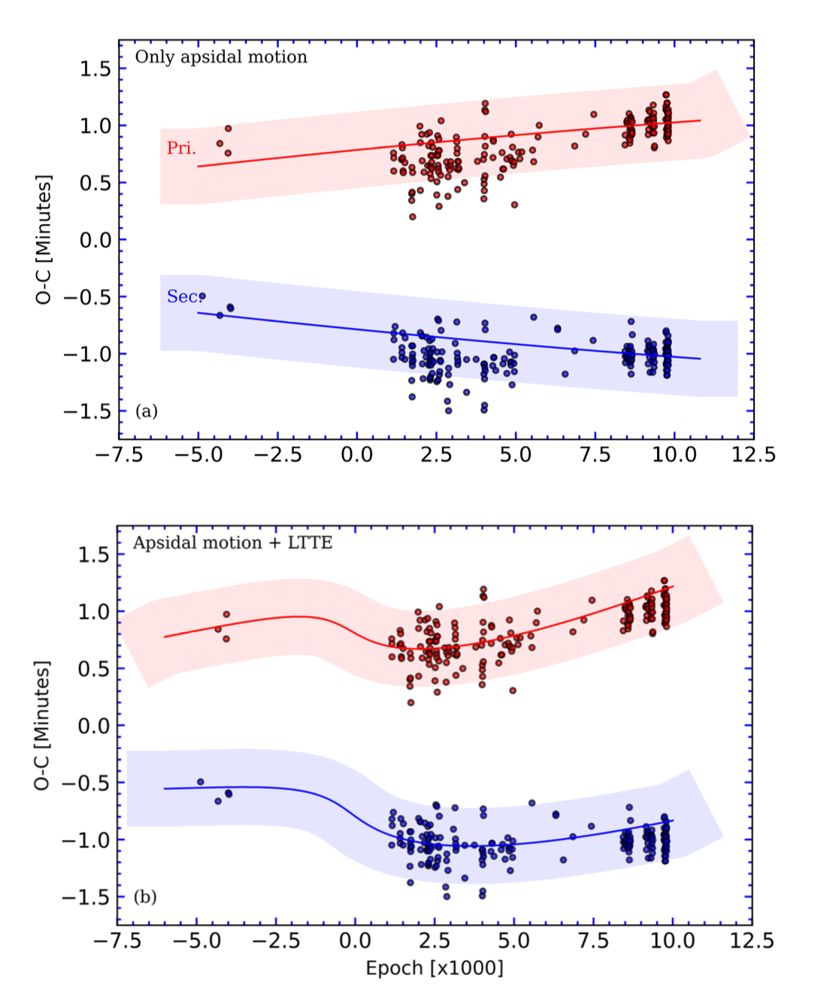
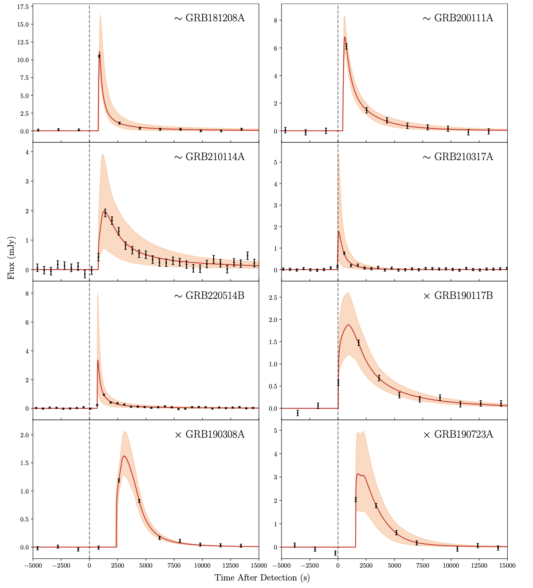
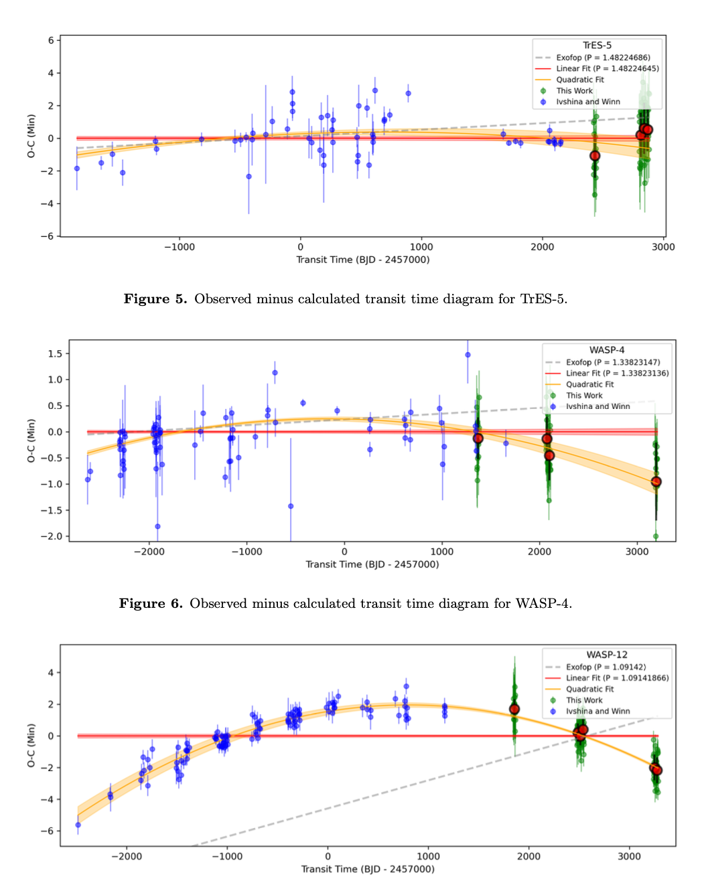

Welcome TESS followers to our latest news bulletin!
This week, we are looking at three recent papers from the archive. Enjoy!
First, we highlight a paper on a comprehensive analysis of CM Draconis. This target represents one of the most thoroughly studied low-mass eclipsing binary star systems, located just 47 light-years from Earth and consisting of two nearly identical red dwarf stars that completely eclipse each other every ~1.27 days. This system serves as a crucial laboratory for understanding stellar evolution, magnetic activity, and potentially the formation of planets around binary stars.
Next, we outline a paper reporting a TESS investigation of gamma-ray burst afterglows. Gamma-ray bursts represent some of the most energetic explosive events in the Universe, releasing more energy than the Sun will produce over its entire lifetime, and are crucial probes of extreme astrophysical processes and cosmic evolution. The optical afterglows they produce are ideal targets for serendipitous detection from TESS, and can provide valuable insights into the nature of their progenitors and the physics of relativistic shock waves.
The third paper presents an analysis of transit times of hot Jupiters seen in TESS data. Tidal interactions between these planets and their host stars can cause orbital decay and potentially even planetary destruction. Understanding the mechanisms and timescales of tidal dissipation is important for constraining stellar and planetary interior physics and predicting the long-term stability of close-in planetary systems. Despite theoretical advances, observational evidence of orbital decay is limited. These TESS observations of several new systems provide observational constraints on the key parameters that describe tidal efficiency.
Comprehensive analysis of CM Draconis: eclipse timing variations driven by either a third body or stellar magnetic activity (Kalomeni & Yakut 2025) :
Kalomeni & Yakut (2025) present a comprehensive analysis of the benchmark eclipsing binary CM Dra, combining an extensive set of observations collected over more than 50 years, including new data from 19 sectors of TESS data. The authors determined precise fundamental parameters for both stellar components, finding primary and secondary masses of 0.2307 ±0.0008 and 0.2136 ±0.0008 MSun, radii of 0.2638 ±0.0011 and 0.2458 ±0.0010 RSun and luminosities of 0.0060 ±0.0005 and 0.0050 ±0.0004 LSun, respectively. The derived distance of 14.4 parsecs aligns closely with measurements from Gaia. One of the more intriguing findings from this study involves eclipse timing variations spanning five decades that show a long-period modulation of approximately 56 years. Kalomeni & Yakut (2025) invoke two competing explanations for these deviations from linear ephemeris: either (a) gravitational perturbations from a Jovian circumbinary planet; or (b) cyclical magnetic activity variations in the stars themselves. The former hypothesis suggests a companion with 1.2 to 2.4 Jupiter masses depending on orbital inclination, while the magnetic activity origin involves starspot cycles and flaring behavior. Kalomeni & Yakut (2025) note that statistical analysis using the Bayesian Information Criterion favors the planetary companion model over magnetic activity alone, but caution that the latter cannot be ruled. The system exhibits intense magnetic activity with hundreds of stellar flares detected during TESS observations, including some occurring during eclipses that suggest both stars are magnetically active. These flares can last several hours and sometimes show complex multi-peaked structures. Additionally, the primary and secondary orbits exhibit a small but measurable orbital eccentricity of about 0.004 to 0.008, respectively, and the binary displays apsidal motion with a period of approximately 4,541 years. The authors argue that continued long-term monitoring will be essential to distinguish between the two explanations for the observed timing variations. Thanks to TESS, Kalomeni & Yakut (2025) were able to obtain sub-percent precision orbital and physical parameters for the benchmark eclipsing binary CM Dra, and investigate the decades-long eclipse timing variations indicating either the presence of a wide planetary companion, or magnetic activity.
A Comprehensive Investigation of Gamma-Ray Burst Afterglows Detected by TESS (Roxburgh et al. 2025) :
Roxburgh et al. (2025) conducted a systematic search for gamma-ray burst (GRB) afterglows in archival TESS data, analyzing 69 events that coincidentally fell within observations from the mission. From this comprehensive survey, the authors identified 11 candidate afterglow signals that coincide with the recorded GRB times, representing a significant expansion of known TESS detections beyond the single previously confirmed case of GRB191016A. The team classified these candidates into several confidence categories, with 3 designated as high-likelihood afterglows, 5 as tentative detections, and 3 as unlikely candidates based on rigorous evaluation criteria. The detection pipeline the authors utilized required candidates to meet three specific criteria: (i) a local brightness maximum within one hour of the GRB trigger; (ii) exceeding a brightness threshold of median plus four standard deviations above background levels during 24 hours centered on the event; and (iii) maintaining said threshold for at least two consecutive exposures. Additionally, Roxburgh et al. (2025) performed a detailed contamination analysis revealing that stellar flares and other astrophysical contaminants were more prevalent in fields closer to the Galactic plane, with contamination fractions ranging from zero percent to ten percent, depending on the target. The authors assign a passing grade for fields with zero contamination, a partial grade where contamination is within 5%, and a failing grade for higher levels of contamination. Roxburgh et al. (2025) attempted to fit theoretical light curves to their observations but encountered significant degeneracies between key parameters, particularly the isotropic-equivalent energy and redshift values. Their modeling process required introduction of an additional time delay parameter averaging 740 ± 690 seconds to account for the gap between gamma-ray emission and optical afterglow onset, which is not incorporated in afterglow models used. When considering only the highest-confidence detections (GRB180807A, GRB191016A, GRB200412B, and GRB220310A), this delay reduced to 560 ± 320 seconds, suggesting a measurable coasting phase before afterglow emergence. The authors note that GRB180807A appears to have been detected only by TESS, highlighting the satellite's unique capability to observe probable bursts with large positional uncertainties that other telescopes might miss due to their smaller fields of view. Roxburgh et al. (2025) found that TESS's detection rate of ~1-2 GRB afterglows per year aligns with theoretical predictions, and note this rate is expected to increase with the current 200 seconds cadence. The authors found 3 highly likely and 5 tentative GRB afterglows in TESS data, illustrating the critical importance of continuous, high-cadence sampling for detection and analysis of afterglow lightcurves, particularly during the critical early phases that are typically missed by ground-based follow-up observations.
In Search of Decay: An Analysis of Transit Times of Hot Jupiters in Main Sequence and Post-Main Sequence Systems (Sodickson & Grunblatt 2025) :
Sodickson & Grunblatt (2025) conducted a comprehensive transit timing analysis of 54 hot Jupiter systems using both archival and new TESS observations to search for evidence of orbital decay as a function of the stellar evolutionary phase. The authors obtained new transit times from TESS, and tested both linear and quadratic ephemeris models to fit them, using the Bayesian information criterion to determine which model provided better represents the data. Among the systems analyzed, 25 showed evidence of decreasing orbital periods over time, with 8 systems demonstrating non-zero period decreases at a 3-sigma significance level: CoRoT-2, TrES-5, WASP-4, WASP-12, WASP-19, WASP-45, WASP-99, and XO-3. Sodickson & Grunblatt (2025) note that the modified stellar tidal quality factor (Q'∗) values derived from these observations were systematically lower than theoretical predictions by orders of magnitude. The discrepancy is quite stark for two targets, CoRoT-2 and TrES-5. The former showed a period decay rate of -50.32 ± 2.18 milliseconds per year, corresponding to a Q'∗ value of (6.33 ± 0.27) × 10³ – which is approximately two orders of magnitude below theoretical expectations of around 2.2 × 10⁵. The latter exhibited a decay rate of -13.91 ± 2.77 milliseconds per year yielding Q'∗ of (2.11 ± 0.42) × 10⁴, again falling short of the theoretical predictions of 2.9 × 10⁵ by more than an order of magnitude. In contrast, derived decay rates for WASP-12 (-30.85 ± 0.82 milliseconds per year, Q'∗=(1.64 ± 0.06) × 10⁵) and WASP-19 (-3.90 ± 0.37 milliseconds per year, Q'∗=(7.10 ± 0.68) × 10⁵) showed better agreement with theoretical models. WASP-12 showed a decay rate of -30.85 ± 0.82 milliseconds per year with Q'∗ of (1.64 ± 0.06) × 10⁵, which demonstrated better agreement with theoretical models. WASP-19 displayed a more modest decay of -3.90 ± 0.37 milliseconds per year, resulting in Q'∗ of (7.10 ± 0.68) × 10⁵, which also aligned reasonably well with some theoretical frameworks. The authors note that several systems showed unexpectedly low Q'∗ values, such as WASP-45 and WASP-99 with values around 10², suggesting potential data quality issues or non-tidal effects. The results of Sodickson & Grunblatt (2025) also revealed that the evolved stellar systems in their sample (with effective temperatures below 6000 K and radii greater than 2 solar radii) had marginally lower Q'∗ limits compared to the full sample, consistent with theoretical expectations that evolved stars should be more tidally dissipative. Specifically, the median lower limit on Q'∗ for evolved systems was 131, while the overall sample median was 345, though both values remain orders of magnitude below theoretical predictions. Sodickson & Grunblatt (2025) utilized TESS data to test theoretical prediction for tidal decay in hot Jupiter systems, identifying 8 promising candidates exhibiting orbital decay as well as another 6 potential candidates.

Fig. 1: Taken from Kalomeni & Yakut (2025). Eclipse timing variations in CM Dra; red symbols denote primary eclipse, blue symbols represent secondary eclipses. The upper panel shows the best-fit model assuming apsidal motion only, whereas the lower panel shows the best-fit model for apsidal motion and a light travel time effect due to a wide planetary companion.

Fig. 2: Taken from Roxburgh et al. (2025). TESS lightcurves (black symbols) of GRB candidates, along with the corresponding best-fit models and 1-sigma confidence intervals (red lines and orange regions).

Fig. 3: Taken from Sodickson & Grunblatt (2025). Observed minus calculated transit times (blue and green symbols) for several hot Jupiters observed by TESS, along with the best-fit linear (red) and quadratic (orange) models.